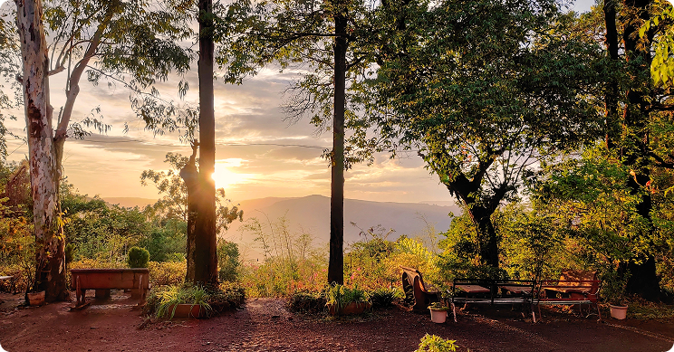

Slow Travel in Panchgani: Experiencing the Hills Beyond Sightseeing
Panchgani is often approached as a quick escape, with tightly packed itineraries and a checklist of viewpoints to cover. Yet the true essence of this hill station reveals itself only when time is allowed to stretch. Slow travel invites visitors to move away from rushing and instead experience Panchgani at a gentler, more natural pace.
Slow travel is less about doing more and more about noticing. In Panchgani, this could mean lingering over a cup of tea as mist drifts across the valley, taking long walks through quiet residential lanes, or spending an afternoon simply watching the changing light. These moments, though unplanned, often become the most memorable parts of a stay.

The choice of accommodation plays a significant role in enabling slow travel. Heritage homes, in particular, are inherently suited to this way of experiencing a place. Built for extended stays rather than short visits, they offer spaces that encourage rest, reflection, and unstructured time. Wide sit-outs, shaded verandahs, and spacious rooms create an environment where slowing down feels effortless.
In Panchgani, slow travel also allows visitors to reconnect with the town beyond its tourist spots. It becomes about understanding the character of the place, the quiet routines of daily life, and the natural rhythm of the hills. The absence of constant activity makes room for stillness, something increasingly rare in modern life.
At Mountview Heritage, guests often find that the most meaningful experiences come from doing very little. The home becomes a place to pause, to reset, and to experience Panchgani not as a destination to be consumed, but as a place to be lived in, even if only for a short while.